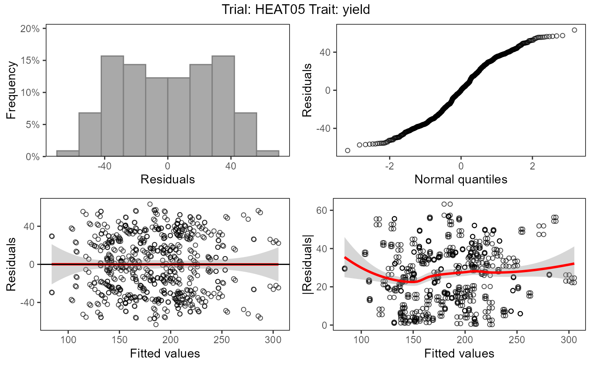
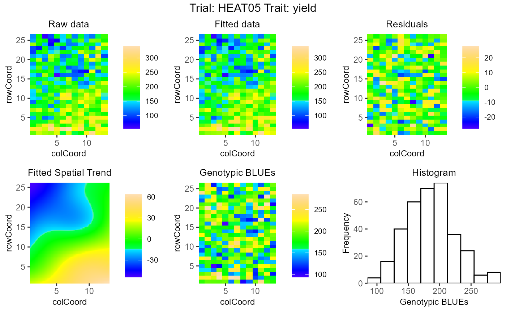

Perform REML analysis given a specific experimental design using either SpATS, lme4 or asreml. SpATS is used as a default method when design is rowcol or res.rowcol, lme4 for other designs. See details for the exact models fitted.
fitTD( TD, trials = names(TD), design = NULL, traits, what = c("fixed", "random"), covariates = NULL, useCheckId = FALSE, spatial = FALSE, engine = NA, control = NULL, progress = FALSE, ... )
| TD | An object of class |
|---|---|
| trials | A character vector specifying the trials for modeling. |
| design | A character string specifying the experimental design. Either "ibd" (incomplete block design), "res.ibd" (resolvable incomplete block design), "rcbd" (randomized complete block design), "rowcol" (row column design) or "res.rowcol" (resolvable row column design). |
| traits | A character vector specifying the traits for modeling. |
| what | A character vector specifying whether "genotype" should be fitted as "fixed" or "random" effect. If not specified, both models are fitted. |
| covariates | A character vector specifying covariates to be fitted as extra fixed effects in the model. |
| useCheckId | Should checkId be used as a fixed effect in the model? |
| spatial | Should spatial models be tried? Spatial models can
only be fitted with SpATS and asreml. If SpATS is used for modeling, only
spatial models can be fitted and spatial is always set to |
| engine | A string specifying the name of the mixed modeling engine to use, either "SpATS", "lme4" or "asreml." For spatial models, "SpaTS" is used as default, for other models "lme4". |
| control | An optional list with control parameters to be passed to the
actual fitting functions. Currently |
| progress | Should the progress of the modeling be printed. If
|
| ... | Further arguments to be passed to |
An object of class STA, a list containing, per trial
that has been analyzed, a list of:
A list of models with fitted with genotype as random effect.
A list of models fitted with genotype as fixed effect.
An object of class TD containing the data on which
mRand and mFix are based.
A character vector indicating the traits for which the analysis is done.
A character string containing the design of the trial.
(see fitTD for the possible designs).
A character string indicating the spatial part of the model.
FALSE if no spatial design has been used.
A character string containing the engine used for the analysis.
A character string indicating the variable that has been predicted.
The actual model fitted depends on the design. For the supported designs, the following models are used:
trait = genotype + subBlock + e
trait = genotype + repId + repId:subBlock + e
trait = genotype + repId + e
trait = genotype + rowId + colId + e
trait = genotype + repId + repId:rowId + repId:colId + e
In the above models fixed effects are indicated in bold, random
effects in italics. genotype is fitted as fixed or random effect
depending on the value of what.
In case useCheckId = TRUE, an extra fixed effect checkId is
included in the model.
Variables in covariates are fitted as extra fixed effects.
When SpATS is used for modeling, an extra spatial term is included
in the model. This term is constructed using the function
PSANOVA from the SpATS package as
PSANOVA(colCoord, rowCoord, nseg = nSeg, nest.div = 2)
where
nSeg = (number of columns / 2, number of rows / 2). nseg and
nest.div can be modified using the control parameter.
When asreml is used for modeling and spatial is TRUE
six models are fitted with different random terms and covariance structure.
The best model is determined based on a goodness-of-fit criterion, either
AIC or BIC. This can be set using the control parameter criterion,
default is AIC.
The fitted random terms depend on the structure of the data. If the design
has a regular structure, i.e. all replicates appear the same amount of times
in the design, the following combinations of random and spatial terms are
fitted
random = NULL, spatial = exp(rowCoord):colCoord
random = NULL, spatial = rowCoord:exp(colCoord)
random = NULL, spatial = iexp(rowCoord,colCoord)
random = repId:rowId, spatial = exp(rowCoord):colCoord
random = repId:colId, spatial = rowCoord:exp(colCoord)
random = repId:rowId + repId:colId, spatial = iexp(rowCoord,colCoord)
If the design is not regular the following combinations of random and spatial terms are fitted
random = NULL, spatial = ar1(rowId):colId
random = NULL, spatial = rowId:ar1(colId)
random = NULL, spatial = ar1(rowId):ar1(colId)
random = repId:rowId, spatial = ar1(rowId):colId
random = repId:colId, spatial = rowId:ar1(colId)
random = repId:rowId + repId:colId, spatial = ar1(rowId):ar1(colId)
If there are no replicates in the model, repId is left out from the random parts above.
Maria Xose Rodriguez-Alvarez, Martin P. Boer, Fred A. van Eeuwijk, Paul H.C. Eilers (2017). Correcting for spatial heterogeneity in plant breeding experiments with P-splines. Spatial Statistics https://doi.org/10.1016/j.spasta.2017.10.003
Butler, D. G., et al. (2010). Analysis of Mixed Models for S language environments: ASReml-R reference manual. Brisbane, DPI Publications
Douglas Bates, Martin Maechler, Ben Bolker, Steve Walker (2015). Fitting Linear Mixed-Effects Models Using lme4. Journal of Statistical Software, 67(1), 1-48. https://www.jstatsoft.org/article/view/v067i01/0.
## Fit model using lme4. myModel1 <- fitTD(TD = TDHeat05, design = "ibd", traits = "yield", what = "fixed")#>#> Summary statistics #> ================== #> #> Summary statistics for yield in HEAT05 #> #> yield #> Number of observations 338 #> Number of missing values 0 #> Mean 184.16 #> Median 179.81 #> Min 54.58 #> Max 341.77 #> First quantile 148.56 #> Third quantile 220.50 #> Variance 2569.229 #> #> #> Predicted means (BLUEs) #> =============================== #> Best 20 genotypes #> BLUEs SE #> SB023 286.87 11.351 #> SB025 286.47 11.240 #> SB022 283.72 11.389 #> SB032 277.66 11.227 #> SB011 268.25 11.524 #> SB156 265.26 11.385 #> SB144 263.42 11.462 #> SB031 251.09 11.235 #> SB093 246.63 11.274 #> SB020 245.97 11.290 #> SB055 244.17 11.554 #> SB054 244.11 11.612 #> SB028 241.92 11.410 #> SB128 238.40 11.544 #> SB194 238.22 11.307 #> SB027 238.02 11.273 #> SB155 236.74 11.327 #> SB143 234.15 11.493 #> SB163 232.77 11.232 #> SB181 232.68 11.257## Create a pdf report summarizing results. # \donttest{ report(myModel1, outfile = tempfile(fileext = ".pdf"))#> Warning: Model with genotype random not available for trial HEAT05. #> Report skipped.# } ## Fit model using SpATS. myModel2 <- fitTD(TD = TDHeat05, design = "res.rowcol", traits = "yield", what = "fixed")#>summary(myModel2)#> Summary statistics #> ================== #> #> Summary statistics for yield in HEAT05 #> #> yield #> Number of observations 338 #> Number of missing values 0 #> Mean 184.16 #> Median 179.81 #> Min 54.58 #> Max 341.77 #> First quantile 148.56 #> Third quantile 220.50 #> Variance 2569.229 #> #> #> Predicted means (BLUEs) #> =============================== #> Best 20 genotypes #> BLUEs SE #> SB023 285.06 11.181 #> SB025 284.27 11.079 #> SB022 281.86 11.242 #> SB032 278.75 11.111 #> SB011 270.48 11.319 #> SB156 266.81 11.300 #> SB144 265.17 11.354 #> SB031 253.33 11.056 #> SB093 247.56 11.197 #> SB055 246.73 11.390 #> SB054 246.58 11.474 #> SB020 241.32 11.159 #> SB028 239.31 11.241 #> SB194 238.18 11.300 #> SB128 237.68 11.343 #> SB155 236.16 11.255 #> SB027 235.91 11.125 #> SB143 235.82 11.390 #> SB163 233.97 11.130 #> SB181 233.14 11.084#> Warning: Model with genotype random not available for trial HEAT05. #> Report skipped.# } ## Fit model using asreml. if (requireNamespace("asreml", quietly = TRUE)) { myModel3 <- fitTD(TD = TDHeat05, design = "res.rowcol", traits = "yield", what = "fixed", engine = "asreml") summary(myModel3) # \donttest{ report(myModel3, outfile = tempfile(fileext = ".pdf")) # } }#> License check Thu Aug 20 13:49:02 2020#> Warning: Model with genotype random not available for trial HEAT05. #> Report skipped.